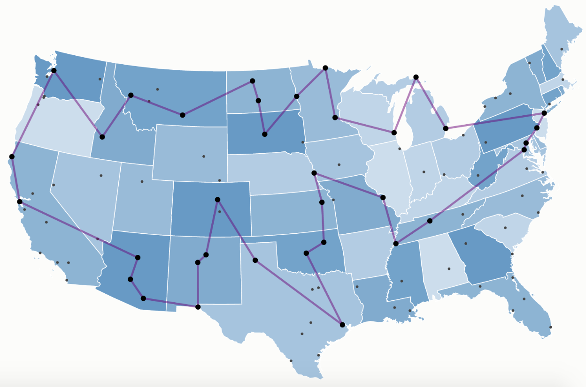
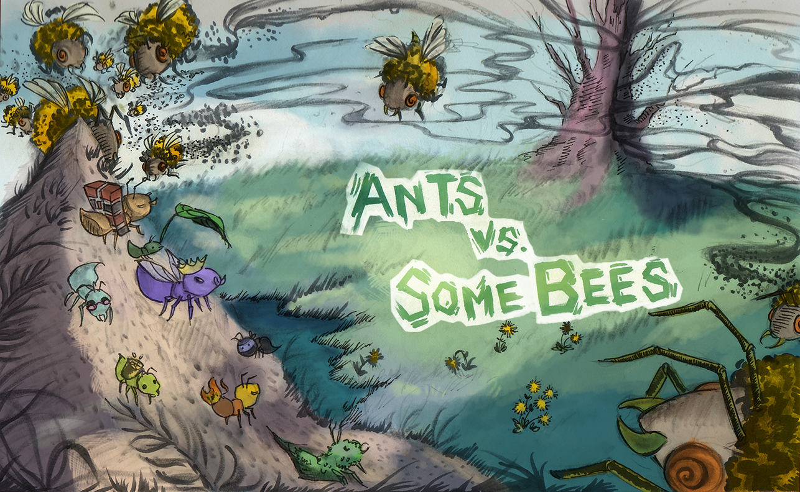
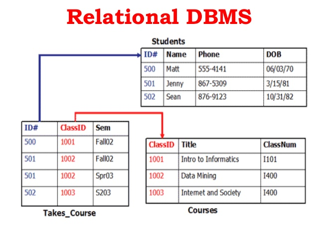
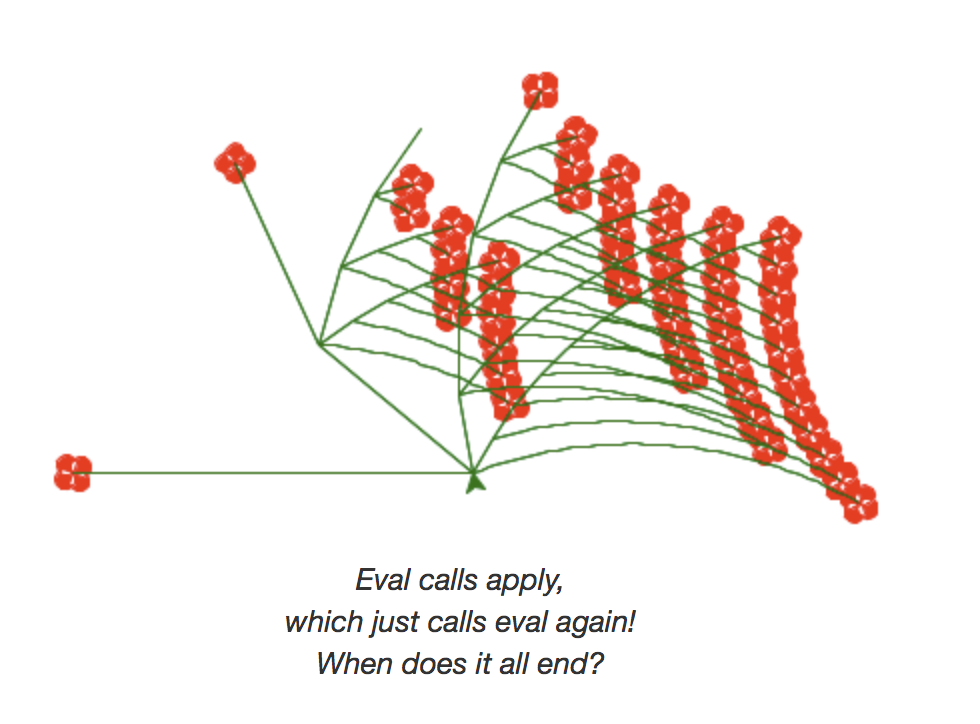

My Projects
Intractable Problems:The Modified Traveling Salesman Project

This was a project for my Algorithms course: CS170. The project specification can be found here.
Brief:
The project was a modified version of the famously intractable Traveling Salesman Problem (TSP). Given an input graph where each vertex represents a kingdom, and there exist edge weights as well as vertex costs for each kingdom; our task was to design and develop an algorithm that conquers all kingdoms (vertices) while minimizing the Total Cost = ∑ Conquering costs + ∑ Traveling costs.
This project was trickier than the TSP because of certain special rules that the project allowed:
- Once you conquer a kingdom, all its neighbours are automatically conquered.
- Kingdoms can be visited without conquering them.
- One must begin and end the tour at the starting kingdom given to us.
The algorithm:
We utilized a two-part approach to derive a solution given an input instance:
- Finding the set of special nodes to conquer
We used a greedy strategy with multiple heuristics to approximate the minimum weighted set cover (i.e. given a graph with vertex weights, finding the minimum weight that covers the entire graph). Our heuristics include combinations of max_neighbours, average_edge_cost, min_conquering_cost, et al.
- Generating a cheap tour through these special nodes
Once we have determined our set of special nodes, we generate the cheapest possible tour through these subset of vertices. We used a number of approaches to approximate the best possible tour through these vertices:
- Creating a Steiner Tree of the special nodes and running all pairs shortest path to generate a tour from the starting vertex
- Reducing the problem to Metric-TSP by adding heavy-weighted dummy edges to make the graph complete; we then use Christofides algorithm
- We also tried to use a greedy approach by running Dijkstra's algorithm from every special node and greedily adding the closest special node to the tour
Algorithm-centric projects
- BearMaps

- Yelp Restaurant Recommendations

- Ants vs SomeBees

System-based projects
- Database

- Scheme Interpreter
